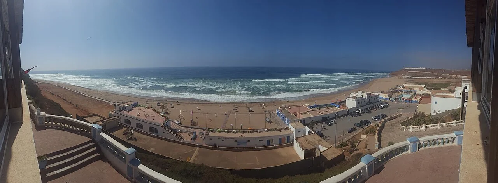

Sidi Ifni
Sidi Ifni, Maroc · surf

Une étape de surf au sud du littoral marocain. La ville domine l’Atlantique depuis son plateau côtier.
- Lieu
- Sidi Ifni, Maroc
- Niveau
- Variable selon les conditions
- Activités
- surf
- Type d'eau
- Mer / océan
- Coordonnées
- 29.38, -10.18 (position approximative du secteur)
Ouvrir dans Ocean Buddy Télécharger sur l'App Store
Source : Office national marocain du tourisme.